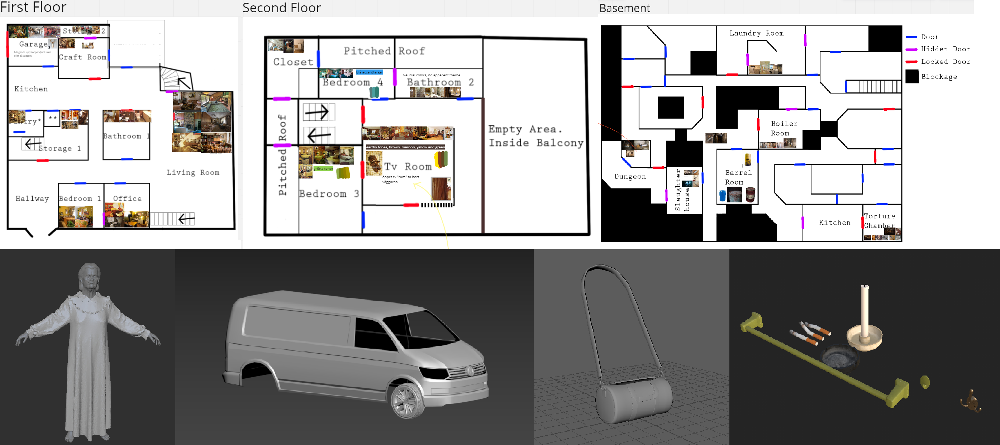
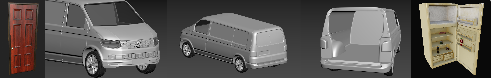
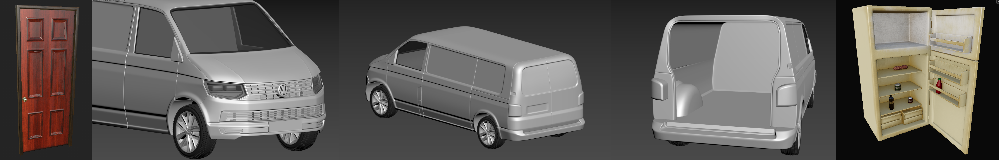

Monday, March 27th
The first day of week two, I startd off by researching some unreal capabilities and looking into upcoming updates to the software. I also looked briefly at the requirements of the VR system and how it would apply to the UI implementation. I then spent a little time familiarizing myself with the new UEFN engine and downloading it, before working on moodboards and asset lists for the level. Finally, I spent a few hours in documents explaining the functionality of the UI and the assets it will rely upon.
In order from left to right, and up to down: these pictures depict the moodboards for each room in the middle, upper and lower floors of the house, then progress on the antagonist Greta, progress on the player's van, the player's bag, and some finished environmental props.
Tuesday, March 28th
On Tuesday, I started working on a prototype for the settings menu and level information. Both of these menus will be shown in the same
diegetic game element. I want to use diegetic UI to increase the immersion, as I believe it is vital for the enjoyability of our game.
I combine the two menus into one element for ease of use to the player. This way, they will have fewer objects to keep track of.
The game element that they are placed on is going to be a clipboard with a page relating to each of the settings menus. On these pages will
be sliders, checkboxes and such which can be interacted with and which will look like pencil markings. The pages will be animated to flip
and fold over, contorting and deforming from its original shape, just like a clipboard or book would. Because we are working in VR,
the player will be able to see every angle of the clipboard, meaning I have to create a system which keeps every page looking as it should
even when the player is't interacting with it. We don't want text on a page to suddenly disappear when the page starts flipping over, as
it would likely make players more disconnected from the game. I want to pay attention to such details for this project.
I started working within a fresh Unreal Project, trying to get a prototype up and running. I tried a method which relied on the
Draw Material to Render Target to update the material on a page (a plane mesh) in accordance with how a menu (a user widget) changed.
I wrestled with this method for the duration of the day, learning a lot of useful things but not accomplishing my goal.


Above are a couple of small GIF displaying the procedural carpet material and procedural stone wall material made by our lead environment artist Lucas using parallax mapping.
Wednesday, March 29th
I kept working on the prototype for our clipboard during the eighth day of the project. For a few hours, I debugged the system I had built
the previous day before eventually coming to the realiziation that the method I had been trying would not work for my needs.
I would need a UI element (a widget), which are projected on a flat plane, to be placed up against the page while the page is being interacted with.
A page will be interactable only while it is at the front of the clipboard, at which time it will also be flat. As the page then flips, I need to remove
the widget as it would not bend along with the page. This is because a widget placed in game space is on a flat plane. But when the page turns, I need it
to keep looking as it did with the widget on it even as the widget is removed. A way of accomplishing this is by capturing a snapshot of the widget's
appearance and turning this into a texture. Then, you need simply apply that texture to a dynamic material which you in turn apply to the page's mesh.
To accomplish this, I make use of the Scene Capture Component 2D object, basically a camera which feeds whatever it sees into a rendertarget. I can then use
the rendertarget's texture to update the page dynamically. I managed to implement this to the point where I can live update a page (plane mesh) to
perfectly mirror a widget.
From left to right: the updated lockpicks by Wille, and from Felicia, assortment of cupboards / drawers, TV, casette player, casettes and player hand model.
Thursday, March 30th
Thursday went along similarly. I spent the day trying to create functionality for several clipboard pages. I thought about a few different ways of
accomplishing this before I started working.
One idea was to have a SceneCaptureComponent2D (or SCC2D for short) for each of the pages, and place a Widget under it.
That way, there would always be a camera pointing to each page, updating it's contents whenever needed. As a page was turned, the SCC2D and its Widget would be
teleported away to some remote location and be replaced with the new page's SCC2D, which is ready to recieve inputs. For this method I would create all the neeed
assets (like materials, rendertargets and more) manually for each page, making it somewhat inflexible and leaving it very cluttered.
The idea I instead implemented was one which employs but a single SCC2D with a single Widget attached to it. I preferred this way as it required much fewer components.
I let the SCC2D camera capture an orthographic view
with a width of 200 units, and capture Final Colour LDR in RGB. I place the Widget very slightly below the SCC2D (just 0,1 units was enough), and very slightly above
the page underneath it (again, 0,1 units). I use these small distances so that the camera can capture exactly the right view (the Widget) and so the Widget is neither
placed inside the page nor too far above it so it would appear floating.
For each of the different pages, I created a dedicated Widget with the appropriate contents. Through blueprints I create one Render Target 2D and one Dynamic Material
for every page. I then allow the Dynamic Material of the first page to take the texture of it's Render Target 2D, which in turn gets a texture from the SCC2D.
When I "flip" a page, I move the currently selected page out of the way and move the SCC2D (and by extension the Widget) down to again be very near the top page.
I also let the SCC2D broadcast its view to the Render Target 2D of the Dynamic Material belonging to the new top page, which makes the page mirror the Widget.
As I flip back, I basically run the same sequence but in reverse. So far, there is no animation implemented, and I just move the page out of the way.

A basic version of the clipboard mirroring the displayed Widget.
Friday, March 31st
I spent most of my time during the Friday wrestling with Unreal, trying to make the clipboard work. I still had to make it work using actual page models, and with
animations, not to mention making it interactable for the player. First and foremost, I started working on getting the page skeletal mesh to work, replacing the simple
planes I had been using prior. This proved to be quite a challenge. After a bit of debugging I found that the issue was in my material, and swiftly fixed the issue.
I then got to work implementing the animation for the skeletal meshes.
Unreal did not seem to like that.
There was an issue in that the imported animation was 100x too small, eventhough its mesh was sized correctly. As soon as the animation was played, the mesh instantly
shrank down to little more than a speck of sand. I worked for a good while trying to scale the animation in the engine and reimporting it with different settings, but to no
avail. Then one time as I was testing to see if the problem had been resolved, the pages had stopped rendering. I did not, and still do not, know why this happened. My
best guess is that something in the project became corrupted.
So, I created a new project and quickly got back to where I had left off. Though the projects looked identical, this one worked! I decided to use a workaround for the
animation instead of meddling with artist shenanigans, waiting instead for an artist to create a more functional mesh and animation down the line. For now, this simple
prototype would do. I also started planning how to handle inputs from the player, and got a basic plan down for when that time comes.
 

In the above GIF, the newly implemented animation support of the clipboard is being shown off. As there is no animation for the page flipping back, it is for now teleported to its original position instead. Below it, a door made by Wille, a van made by Loke and finally, a refridegrator by Ellinor.